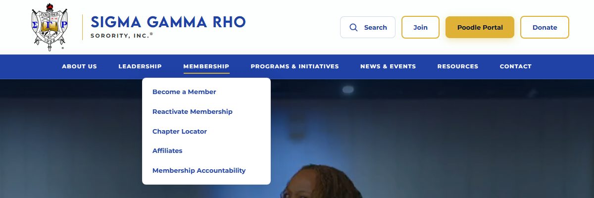
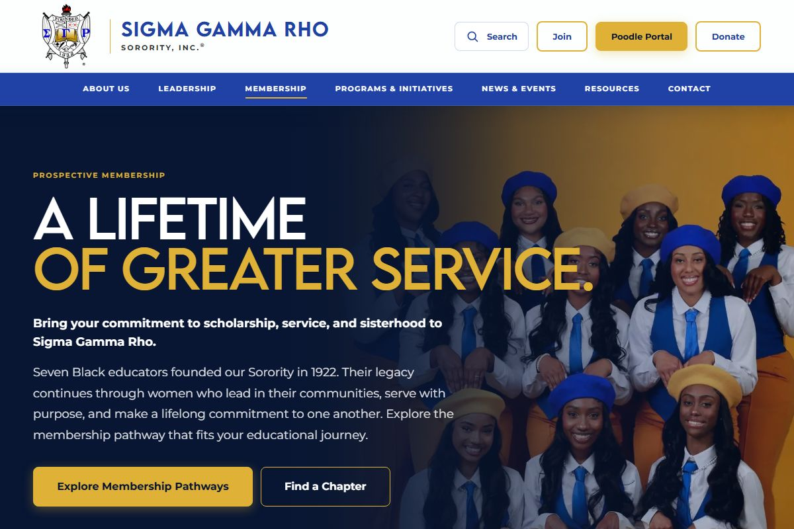
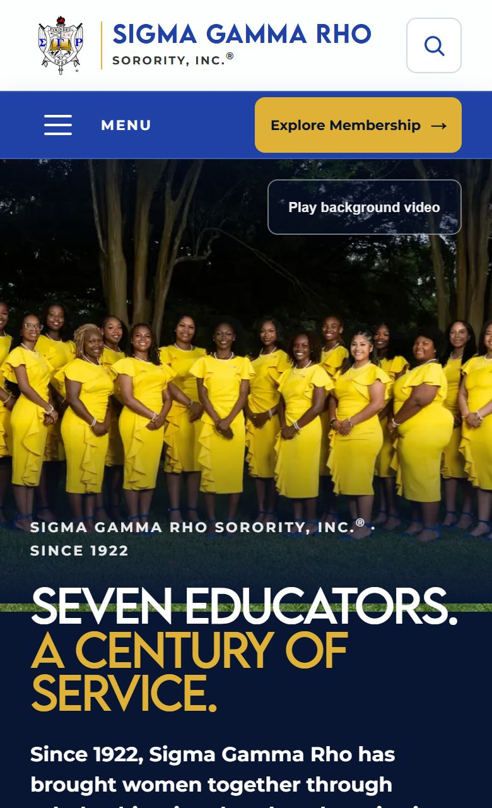

the short version
Summary
Prospective members expected a top-level Membership section, and every card-sort participant grouped "Become a Member" with the other membership actions. Insider titles such as "Grand Basileus" were the biggest barrier for non-members.
I moved Membership into the primary navigation and put "Become a Member" first. I also replaced the weak "Service & Impact" label and designed a shallower navigation. The captured desktop and mobile interfaces give joining a prominent control.
Every participant who attempted the join task in the tree test went straight to Membership → Become a Member. The average time was 7.5 seconds.
The tree test evaluated a proposed structure. This page does not report a post-launch test or measured change on the organization's live site.
the setup
Project Overview
Research question: why do prospective members struggle to find membership information, and what does the navigation reveal about the gap between how the organization thinks about its content and how visitors expect to find it?
| Participation by phase | 9 card-sort participants and 9 tree-test participants. The groups were mostly different. The exact overlap is unknown. |
|---|---|
| Card sort segments | 6 sorors (3 undergraduate, 3 alumnae) and 3 non-members |
| Tree test segments | 2 members and 7 non-members |
| Methods | Competitive analysis of 3 NPHC sororities, open card sort (30 cards), tree test (10 tasks) |
the three that drove decisions
Key Findings
1. Membership belongs at the top level
Evidence: all 9 card-sort participants (100%) grouped "Become a Member" under Membership. All 3 benchmarked sororities put membership in primary navigation. In the tree test, the join task reached 100% success, and every participant took the direct path.
Decision: make Membership a primary category and put "Become a Member" first.
2. Insider titles block non-members
Evidence: "Find the current leader" was the weakest tree-test task (55.6% success, 27.6s average). Non-members in the card sort paused at or misplaced terms like "Grand Basileus."
Decision: keep the official titles, but explain them in plain language.
3. "Service & Impact" didn't read as programs
Evidence: "Find community programs" reached 62.5% success, and only 37.5% of participants went directly to it. In the card sort, programs, foundations, and initiatives formed one group (National Programs 77.8%).
Decision: combine them under one programs label instead of the tested "Service & Impact."
what held across methods
Cross-Method Synthesis
Membership belongs at the top level
Card sorting produced unanimous grouping of membership actions, and peer organizations put membership in primary navigation.
Insider terminology is a barrier
Non-members paused or misplaced items when organizational jargon appeared. They needed plain-language context alongside the official terms.
Service and program content share a mental model
Participants grouped programs, foundations, and initiatives together on their own, while the existing site split them across several paths.
Structural depth slows everyone down
Hesitation in the card sort and the competitor patterns both pointed to a shallower architecture, with two levels as the practical limit.
research translated into structure
Proposed Site Architecture
The original artifact identifies Membership as the primary-goal category. "Programs & Initiatives" and several low-consensus placements are synthesis decisions, not direct card-sort consensus.
every change needed a reason
Design Rationale
| Structural change | Research basis |
|---|---|
| Membership elevated to primary navigation | All participants grouped membership content together, and competitive analysis showed it as a top-level category. |
| Programs consolidated into "Programs & Initiatives" | Participants grouped programs and partner initiatives together. The label is my synthesis, not a direct consensus outcome. |
| News & Events reintroduced as a category | The card sort showed strong clustering of time-sensitive content such as press releases, conferences, and calendar items. |
| Navigation depth reduced | The tree test showed faster completion on flatter paths. Paths needing three or more clicks were removed. |
| Contact moved under Resources | "Contact Us" had moderate card-sort agreement (66.7%), not enough to justify a standalone top-level item. |
| Plain-language context added for insider terms | Non-Greek participants struggled with terms such as "Grand Basileus." |
| Sub-items ordered by user intent | Items with higher intent and a broader audience come first. "Become a Member" leads Membership, followed by Chapter Locator. |
| Affiliates placed under Programs & Initiatives | Affiliates had low card-sort consensus (44.4%). A content review showed these groups work more like community and youth programs than membership pathways. |
the same project, carried into code
From Findings to Coded Redesign
I carried the research into a coded website redesign. The screenshots show the resulting desktop and mobile interfaces. Each row below traces a finding to a design decision and to what can be seen in the captured build; interaction and sitewide behavior still need a code review or hands-on test.

| Finding | Design decision | Captured implementation |
|---|---|---|
| Join task: 100% direct; membership grouped unanimously | Membership in the primary navigation, with "Become a Member" first | The open Membership menu lists Become a Member first, and the desktop header shows a Join button. Shown |
| The join path needed to remain easy to find on small screens | Keep a membership entry outside the collapsed menu | The mobile capture shows "Explore Membership" next to the Menu button. Shown |
| Structural depth slowed participants | Limit navigation depth to two levels | The captured Membership menu has a single dropdown level. Other menus still need a full check. Partial |
| "Find the current leader": 55.6% success | Explain insider titles in plain language | The header shows a Leadership category, but the capture does not show how the destination page explains "Grand Basileus." This change remains unverified. Unverified |
| "Service & Impact" tested weakly | Use a clearer programs label | The desktop capture shows "Programs & Initiatives" in primary navigation. The revised label has not been tree-tested. Shown |


Where the captured build departs from the tested structure: Contact appears as a top-level item, and Affiliates appears under Membership. These placements and the revised "Programs & Initiatives" label were not evaluated in the original tree test. A follow-up tree test should check them in the built navigation. Request the redesign code →
the supporting evidence, if you want all of it
Full Results
The findings above draw on the results below. Open any section to see the complete data.
Competitive benchmarking: 3 NPHC sororities compared with the original site
| Navigation feature | AKA | DST | ZPB | SGRho |
|---|---|---|---|---|
| Clear primary CTA (Join) | ✓ | ✓ | ✓ | × |
| Dedicated membership section | ✓ | ✓ | ✓ | × |
| Dropdown simplicity (<6 items) | ✓ | × | ✓ | × |
| Search functionality | ✓ | ✓ | × | × |
| Visual readability | ✓ | ✓ | ✓ | × |
| Persistent navigation | ✓ | ✓ | ✓ | ✓ |
| Logical labeling | ✓ | ✓ | ✓ | × |
- Membership is always top-level. Every benchmarked organization puts membership in primary navigation. The original site offered only "Reactivate" as a general membership entry point.
- Programs are grouped under one umbrella. Comparable sites keep community work in one category. The original site split it across Programs, Community Impact, and nested dropdowns.
- Partner content is co-located. Peer sites keep partnership content together instead of spreading it across several top-level areas.
Card sort: agreement for 25 of the 30 cards (9 participants)
Percentages are the share of all 9 participants who placed an item in the category shown (88.9% = 8 of 9; 77.8% = 7 of 9; 66.7% = 6 of 9). Items with weak or split grouping are omitted, so not all 30 cards appear.
High consensus ≥75%
- Our Founders: 100%
- Become a Member: 100%
- Latest News: 100%
- Upcoming Events: 100%
- Regional Leadership: 100%
- Reactivate Membership: 88.9%
- National Programs: 77.8%
Moderate 50–74%
- Our Foundations: 66.7%
- Partner Foundations: 66.7%
- Chapter Locator: 66.7%
- Contact Us: 66.7%
- Careers: 55.6%
Low <50%
- Affiliates: 44.4%
- Media Relations: 44.4%
- Anti-Hazing Policy: 33.3%
- Notable Sigmas: 33.3%
- International Corporate Headquarters: 33.3%
Tree test: all 10 tasks (9 participants, 82.2% average success)
Each task was scored against the 8–9 participants who attempted it. One participant completed only 2 of the 10 tasks, so their responses count only where they apply. 82.2% is the mean of the per-task success rates, which range from 55.6% to 100%.
Join as a member
100%Every participant went directly to Membership → Become a Member, with no hesitation or backtracking.
Reactivate membership
100%Participants went directly to Membership → Reactivate Today, which supports grouping the membership actions together.
Find latest news
100%News & Events worked as an intuitive top-level category.
Get account help
100%Everyone eventually found Resources → Help Center, but half took indirect routes first.
Find a chapter
87.5%Expected path: Membership → Chapter Locator. One participant went to News & Events → Upcoming Events.
Find founders
75%Expected path: About → Our Founders. Some participants mixed this task up with Herstory or Past Grand Basilei.
Contact the organization
75%Expected path: Resources → Contact Us. Some participants looked in membership-related areas first.
Find organization origins
66.7%Expected path: Home → About → Herstory. Participants often read "origins" as Founders or Foundations.
Find community programs
62.5%Based on the card-sort and tree-test evidence, I revised the tested label "Service & Impact" to "Programs & Initiatives."
Find current leader
55.6%Expected path: Home → Leadership → International Grand Basileus. This confirmed the terminology barrier seen in the card sort.
what this study does not prove
Limitations & Next Steps
- A sample of 9 participants per phase limits how far the results generalize.
- Participants came from a convenience sample.
- The tree test used a proposed structure, not a live site.
- The coded navigation has not been tested. Its departures from the tested structure, and the revised "Programs & Initiatives" label, are the next things to test.
Key takeaway: navigation problems in large organizations are rarely just interface problems. They reflect a mismatch between how an organization manages its content internally and how visitors expect to find it.